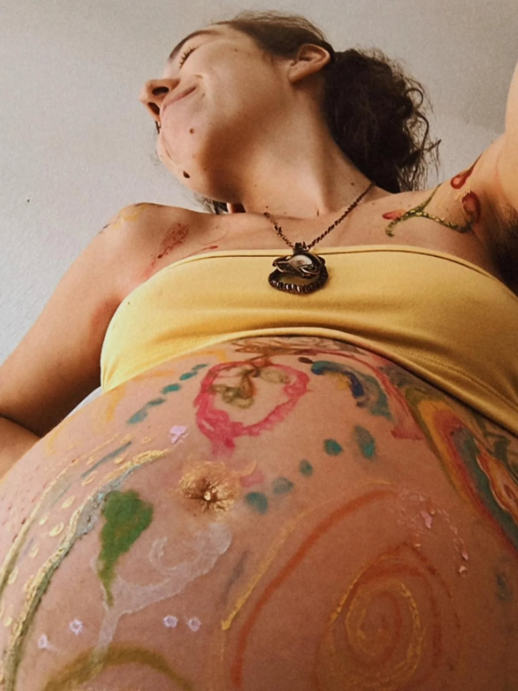
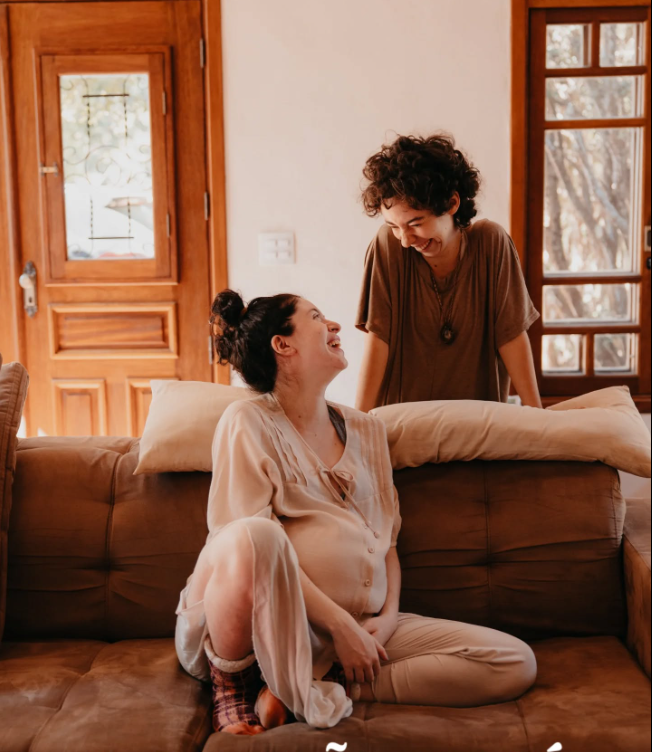
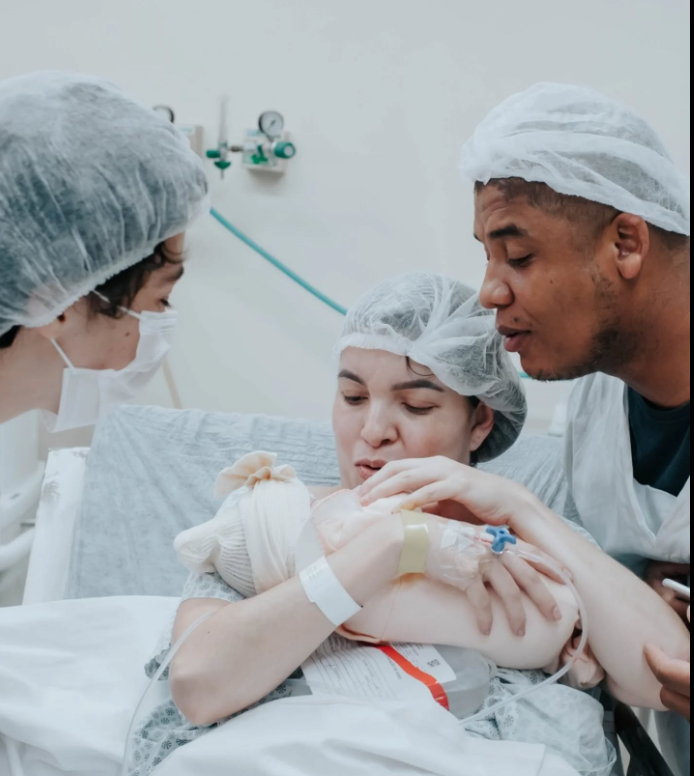
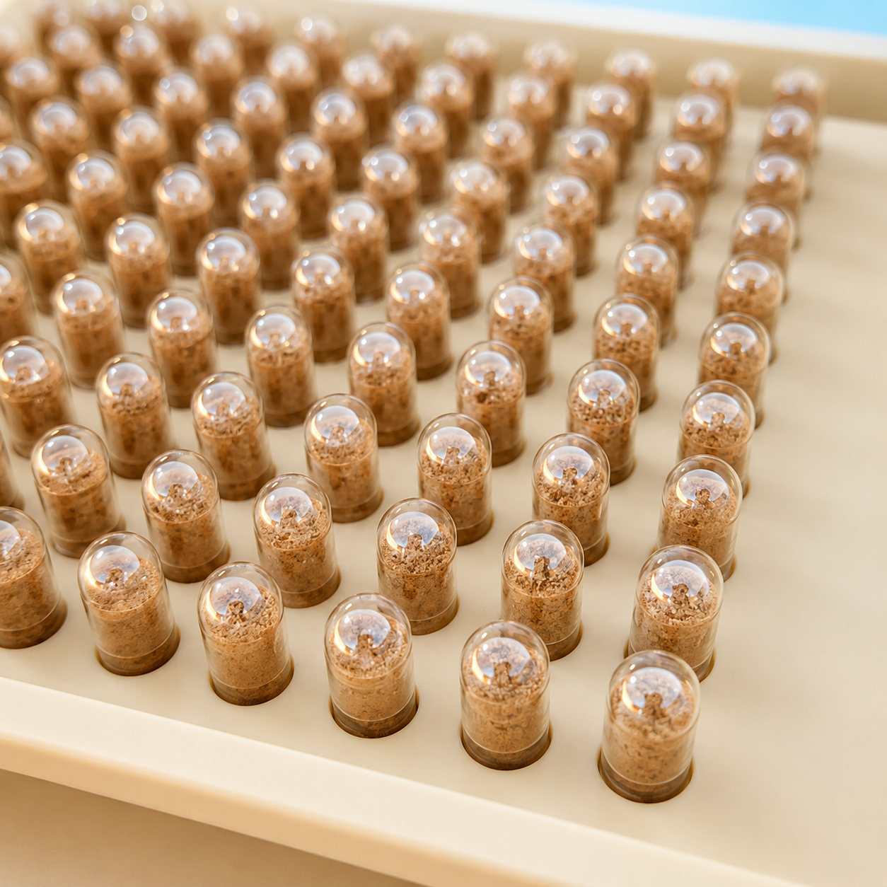
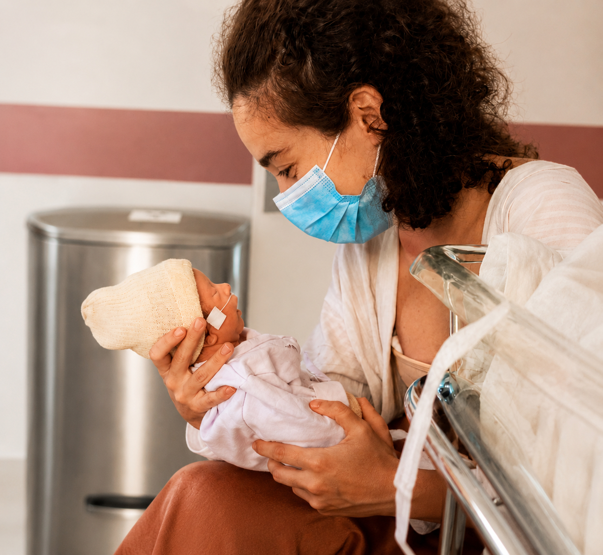
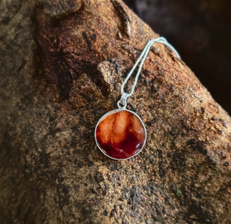

Acompanhamento durante a gestação
Durante a sua gestação teremos encontros presenciais (para quem for de Campinas e região) ou online, onde adentraremos os aspectos físicos, emocionais e culturais que envolvem o gestar e o parir. A ideia é, durante essa espera, a gente estar no lugar de investigação e preparação para a melhor experiência possível, tanto da gestação quanto do parto e também da chegada desse bebê no puerpério.Os encontros permeiam a educação perinatal, onde vamos olhar para a fisiologia e as fases do trabalho de parto, vamos entender as reais possibilidades e os cenários possíveis, vamos adentrar os desejos e os medos e tudo o que envolve a expectativa e a realidade dessa travessia; o preparo emocional, que também é o lugar de olharmos para os seus sentimentos, para a sua história, para a história desse bebê que vem chegando, para o seu contexto e para como tudo isso te afeta, um lugar seguro, de construção de intimidade, onde todas as falas e sentimentos são permitidos e muito bem-vindos; e também, é claro, um olhar para o preparo físico. Vamos não só falar sobre as posições que favorecem o trabalho de parto, como vamos experimentá-las, vamos cuidar da mente e do corpo e construir nossa "maletinha de ferramentas" que vão ajudar durante a gestação e também durante o parto. Podemos experimentar massagens, escalda-pés, uso do rebozo e outras técnicas que se mostrem necessárias. Durante todo esse processo, meu intuito é também trazer para perto a sua parceria, seja seu parceiro ou parceira, ou quem quer que vá estar com você nesse momento do parto.
arrow_back Voltar aos Serviços
Suporte durante o parto
O nascimento do seu bebê é um momento único e tanto você quanto ele merecem vivê-lo com serenidade, segurança e amparo. No dia do seu trabalho de parto estarei ao seu lado, oferecendo suporte físico e emocional, utilizando técnicas de conforto e alívio da dor, como massagens, exercícios de respiração e posicionamentos mais favoráveis, mas principalmente te lembrando dos teus porquês, da sua preparação e te entregando o papel de protagonista nesse momento tão importante para uma melhor experiência de parto.
arrow_back Voltar aos Serviços
Amparo durante o puerpério imediato
O parto não é o final, é o início, por isso, a presença e o suporte para as primeiras horas e dias depois do nascimento do seu bebê são muito importantes. Depois do nascimento, eu fico com você até o estabelecimento da amamentação, até que todos os procedimentos tenham terminado e que vocês possam, por fim, descansar em família. Nos primeiros dias e semanas sigo disponível para dúvidas ou suportes que forem necessários e temos também um encontro presencial para o momento que vocês acharem mais importante. Esse encontro é super importante para revisitarmos a sua experiência de parto e podermos olhar para esse começo de maternidade. Olhamos para como as coisas estão fluindo nessa nova vida com um bebê na família, como está se desenrolando a amamentação e outros tipos de suporte que possam se fazer necessários.
arrow_back Voltar aos Serviços
Cápsulas de Placenta
A placenta é esse órgão que acompanhou, protegeu e nutriu o seu bebê durante toda a gestação. Muito mais do que um órgão, para muitas culturas tradicionais ela é vista como sagrada e, para o momento do pós-parto, é extremamente importante e repleta tanto de nutrientes quanto de hormônios essenciais para a melhor recuperação da pessoa puérpera. O encapsulamento é uma forma de ritualizar e desidratar a placenta para que ela possa ser consumida em formato de cápsulas diariamente durante o puerpério. É uma forma de ajudarmos nosso corpo a repor vitaminas, nutrientes e também hormônios que, no pós-parto, têm uma queda abrupta. Se você deseja conhecer melhor essa prática e entender como funciona o processo de encapsulamento, ficarei feliz em esclarecer suas dúvidas e acompanhar sua decisão. Me manda uma mensagem no WhatsApp para a gente conversar!
arrow_back Voltar aos Serviços
Joia de Placenta
Há momentos que mudam quem somos para sempre. O nascimento de um filho é um deles. Durante meses, a placenta foi a primeira casa do seu bebê. Foi ela quem o protegeu, alimentou e acompanhou cada pequeno instante do seu desenvolvimento. Depois do parto, sua missão termina, mas sua história não precisa acabar ali. Transformar uma pequena parte da placenta em uma joia é uma maneira delicada e cheia de significado de preservar essa lembrança para sempre. Mais do que um acessório, é um símbolo da força, da entrega e do amor que marcaram o começo da maternidade. Cada peça é feita artesanalmente, com respeito e cuidado, tornando-se única, assim como a história de cada mãe e de cada bebê. Nenhuma joia é igual à outra, porque nenhuma placenta é igual à outra. Seja no formato de um pingente, um anel ou um colar, essa lembrança acompanhará você muito além dos primeiros meses. Será um pedaço da sua história.
arrow_back Voltar aos Serviços
Chá de Bençãos
O Chá de Bençãos é um moento preparado para que essa mãe possa receber todo o carinho e todas as bençãos das pessoas que estão ao seu redor. Um monmento para que se firme essa rede, e que essa familia se sinta amada e amparada. Preparamos juntas um evento gostoso dentro daquilo que faça sentido para cada uma. É um dia muito fortalecedor, tanto para o preparo pro momento do parto quanto para o depois, com a chegada desse bebê.
arrow_back Voltar aos Serviços